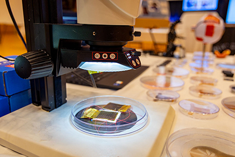

Add Data
Ready to share your data in UNC Dataverse? Learn the simple steps involved in creating your account and adding data to a project dataverse.
Explore Basic Data Management Service
Learn more about the UNC RDMC Basic Data Management Service or get started using the service by submitting a support request.
Prepare Materials for Deposit
Package your research data files using data curation best practices to ensure data meets FAIR principles and quality standards.

Search Data
Discover the multi-disciplinary collections and data in UNC Dataverse. Take advantage of the search, browse, and other features in UNC Dataverse to find data.
Review Guides
Learn more about using UNC Dataverse and its many features through our user guides.
Review Policies
Understand how to properly use UNC Dataverse by reviewing our policies, terms of use, and submission guidelines.
Get Help
Our staff are available to help you with your UNC Dataverse needs. Contact us with any questions, issues or requests for support.
Featured Collections
Showing cards 1 through 3 of 5.